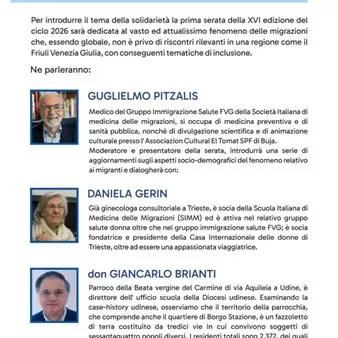

ven 13 nov · dalle 20:45
Immigrazione e integrazione: il mondo a casa nostra
Primo appuntamento della 16esima edizione di "Una vita spesa per la legalità"
 Indicazioni
Indicazioni
- Costi e prenotazioni
- Costo non indicato · Prenotazione non indicata
- Programma
- Programma da verificare. Apri la fonte ufficiale per orari e possibili aggiornamenti.
- In caso di maltempo
- Nessuna indicazione specifica pubblicata.
- Note
- Acquisito automaticamente dalla fonte.
L’EVENTO
Descrizione completa
🌍 𝐈𝐌𝐌𝐈𝐆𝐑𝐀𝐙𝐈𝐎𝐍𝐄 𝐄 𝐈𝐍𝐓𝐄𝐆𝐑𝐀𝐙𝐈𝐎𝐍𝐄: 𝐈𝐋 𝐌𝐎𝐍𝐃𝐎 𝐀 𝐂𝐀𝐒𝐀 𝐍𝐎𝐒𝐓𝐑𝐀
✨ Un incontro per approfondire il tema delle 𝐦𝐢𝐠𝐫𝐚𝐳𝐢𝐨𝐧𝐢, dell'inclusione e della convivenza tra culture diverse, con uno sguardo al Friuli Venezia Giulia e alle sue realtà territoriali.
📅 𝐕𝐄𝐍𝐄𝐑𝐃𝐈' 𝟏𝟑 𝐍𝐎𝐕𝐄𝐌𝐁𝐑𝐄 𝟐𝟎𝟐𝟔 🕘 Ore 𝟐𝟎:𝟒𝟓
📍 𝐀𝐮𝐝𝐢𝐭𝐨𝐫𝐢𝐮𝐦 “𝐀𝐥𝐥𝐚 𝐅𝐫𝐚𝐭𝐭𝐚” (Via I. Nievo, 8 )
🎤 Ne parleranno 𝐆𝐮𝐠𝐥𝐢𝐞𝐥𝐦𝐨 𝐏𝐢𝐭𝐳𝐚𝐥𝐢𝐬, 𝐃𝐚𝐧𝐢𝐞𝐥𝐚 𝐆𝐞𝐫𝐢𝐧 e 𝐝𝐨𝐧 𝐆𝐢𝐚𝐧𝐜𝐚𝐫𝐥𝐨 𝐁𝐫𝐢𝐚𝐧𝐭𝐢, per una serata di approfondimento e confronto sul valore della solidarietà e dell'integrazione.
🎵 L'appuntamento fa parte della rassegna 𝐔𝐧𝐚 𝐯𝐢𝐭𝐚 𝐬𝐩𝐞𝐬𝐚 𝐩𝐞𝐫 𝐥𝐚 𝐥𝐞𝐠𝐚𝐥𝐢𝐭𝐚̀: un percorso di incontri per riflettere sui temi della società, della solidarietà e dell'impegno civile.
IL PROGRAMMA
Programma e orari
Appuntamenti raccolti dalle fonti elencate. Dove manca un orario, non è ancora disponibile in questa scheda.
Programma pubblicato
- Dal 2026-11-13 al 2026-11-13
INFORMAZIONI UTILI
Prima di partire
- Controllare la fonte prima di partire.
ORGANIZZAZIONE